高效 LLM 推理服务基础 II：GPU 入门
GPU 为何是“吞吐机器”：SIMT、warp 与延迟隐藏；roofline 与算术强度、batch-1 解码为何吃不满 GPU；SM、Tensor Core、存储层次与 Hopper/Blackwell 新特性。
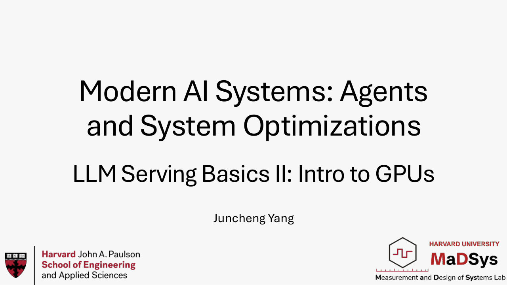
现代 AI 系统：智能体与系统优化
Juncheng Yang
LLM 推理服务基础 II：GPU 入门
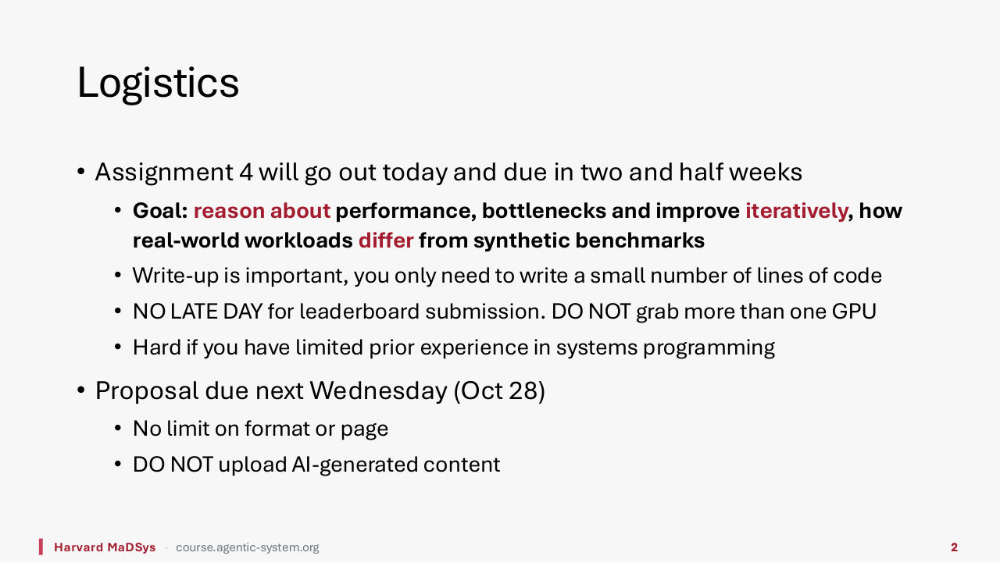
事务安排
- 作业 4 今天发布，两周半后截止
- 目标：分析性能与瓶颈并迭代改进，理解真实负载与合成基准有何不同
- 报告很重要，你只需要写少量代码
- 排行榜提交不能用迟交日。不要同时占用超过一块 GPU
- 如果之前系统编程经验不多，会比较难
- 项目提案下周三（10 月 28 日）截止
- 格式和页数不限
- 不要上传 AI 生成的内容

今天的安排
- 面向 LLM 推理服务的 GPU 入门 [1]
- GPU 基础
- GPU 架构
- GPU 编程与近期的 kernel 进展
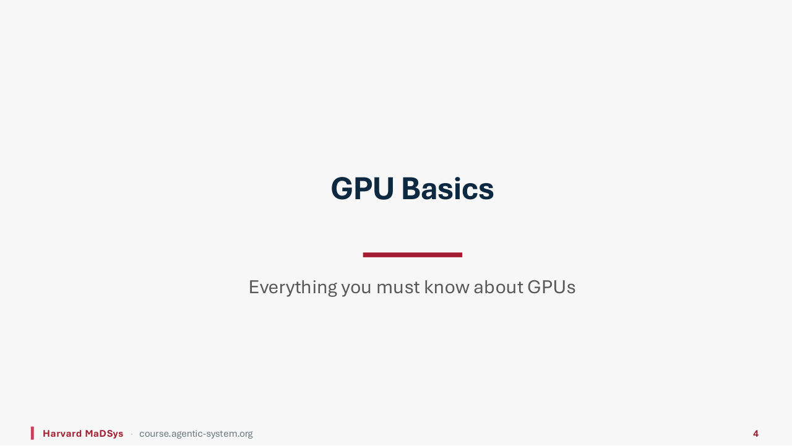
GPU 基础
关于 GPU 你必须知道的一切
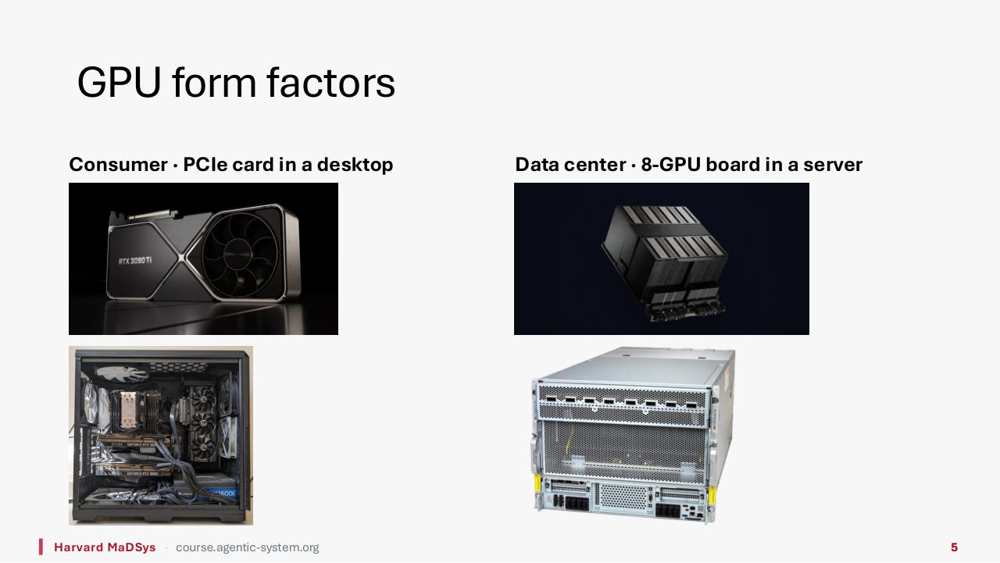
GPU 的形态
- 消费级：插在台式机里的 PCIe 卡
- 数据中心：服务器里的 8 卡 GPU 主板
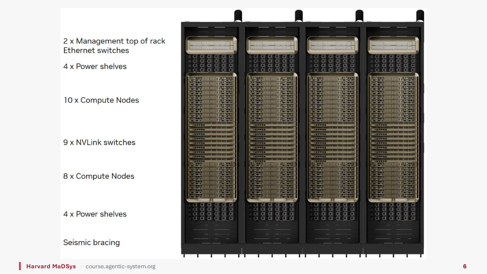
（图片页）
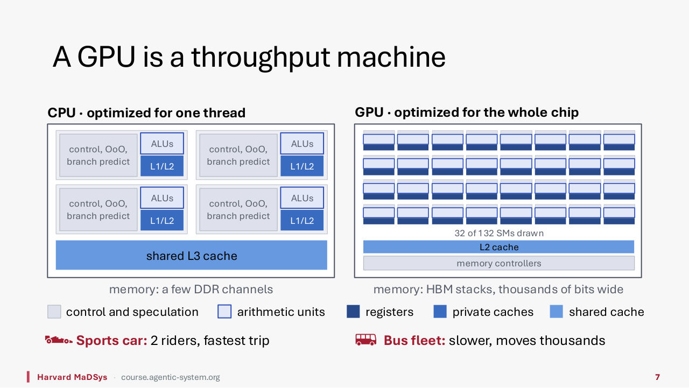
GPU 是一台“吞吐机器”
- CPU——为单个线程优化：每个核心都有控制逻辑、乱序执行、分支预测、ALU、L1/L2；共享 L3 缓存；内存是几条 DDR 通道
- GPU——为整颗芯片优化：（图中画了 132 个 SM 中的 32 个）L2 缓存、内存控制器；内存是 HBM 堆栈，位宽达数千比特
（图例：控制与推测 / 算术单元 / 寄存器 / 私有缓存 / 共享缓存）
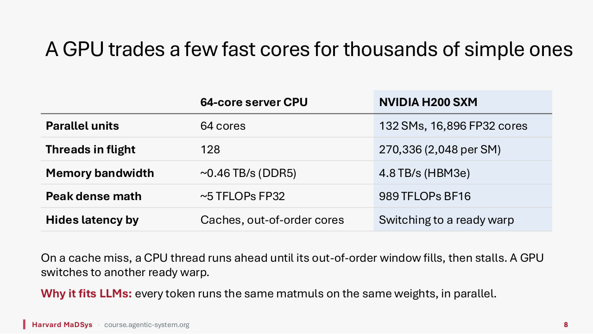
GPU 用几个快核心换来了成千上万个简单核心
| 64 核服务器 CPU | NVIDIA H200 SXM | |
|---|---|---|
| 并行单元 | 64 个核心 | 132 个 SM，16,896 个 FP32 核心 |
| 同时在跑的线程 | — | 270,336（每 SM 2,048） |
| 内存带宽 | ~0.46 TB/s（DDR5） | 4.8 TB/s（HBM3e） |
| 峰值稠密算力 | ~5 TFLOPs FP32 | 989 TFLOPs BF16 |
| 隐藏延迟的方式 | 缓存、乱序核心 | 切换到一个就绪的 warp |
为什么适合 LLM：每个 token 都在同样的权重上并行执行同样的矩阵乘。
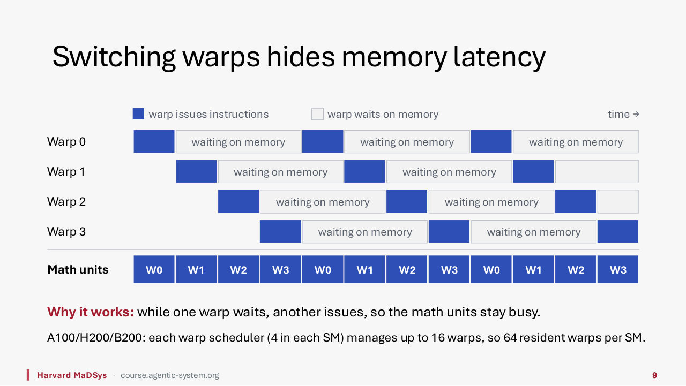
切换 warp 来隐藏内存延迟
（图：Warp 0–3 轮流发射指令和等待内存；算术单元依次执行 W0 W1 W2 W3 W0 W1……始终不空闲）
A100/H200/B200：每个 warp 调度器（每个 SM 有 4 个）最多管理 16 个 warp，所以每个 SM 最多驻留 64 个 warp。
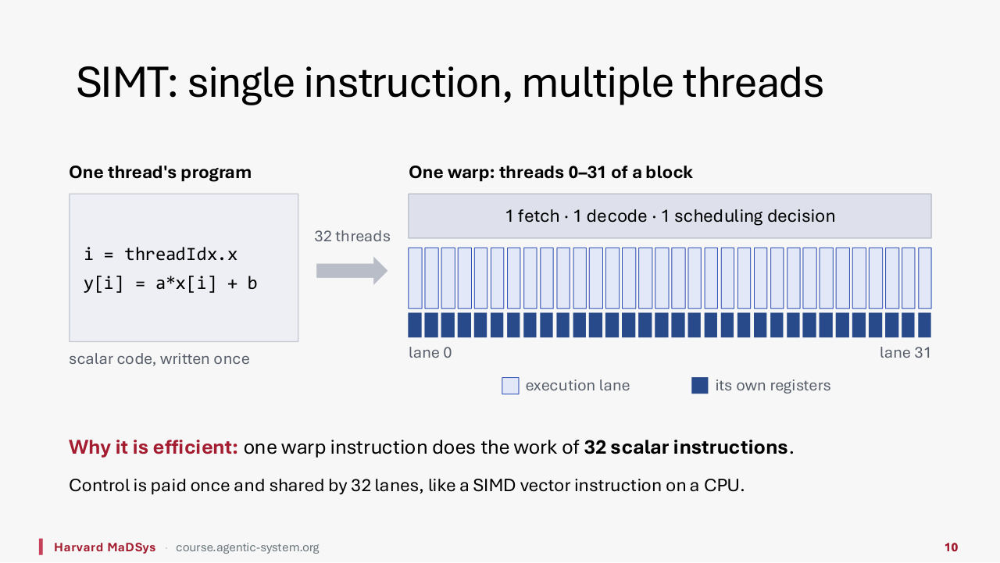
SIMT：单指令，多线程
一个线程的程序（标量代码，只写一次）：
i = threadIdx.x
y[i] = a*x[i] + b一个 warp：一个线程块中的线程 0–31——1 次取指 · 1 次译码 · 1 次调度决策；lane 0 … lane 31 各是一条执行通道，拥有自己的寄存器
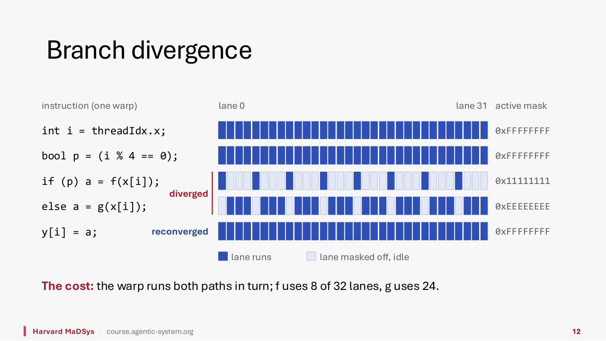
分支发散（Branch divergence）
int i = threadIdx.x;
bool p = (i % 4 == 0);
if (p) a = f(x[i]);
else a = g(x[i]);
y[i] = a;活跃掩码：0xFFFFFFFF → 0xFFFFFFFF → 发散：0x11111111（执行 f）/ 0xEEEEEEEE（执行 g）→ 重新汇合：0xFFFFFFFF
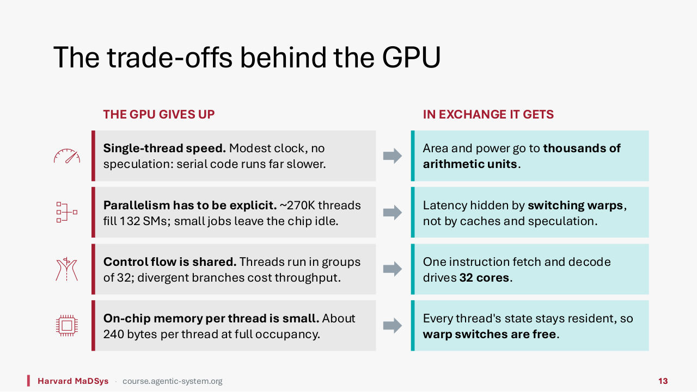
GPU 背后的权衡
| GPU 放弃了 | 换来了 |
|---|---|
| 单线程速度：主频不高，没有推测执行，串行代码要慢得多 | 面积和功耗都给了成千上万个算术单元 |
| 并行必须显式：约 27 万个线程才能填满 132 个 SM；小任务会让芯片闲着 | 靠切换 warp 隐藏延迟，而不是靠缓存和推测 |
| 控制流是共享的：线程以 32 个为一组运行；分支发散会损失吞吐 | 一次取指和译码驱动 32 个核心 |
| 每线程的片上存储很小：满占用时每线程约 240 字节 | 每个线程的状态都常驻，切换 warp 零开销 |
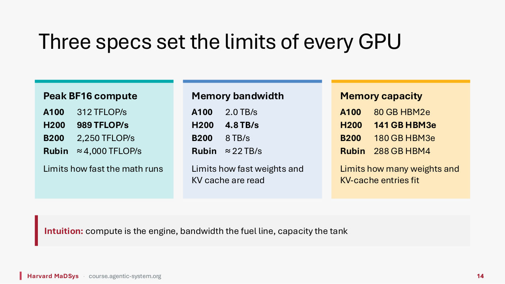
三项指标决定了每块 GPU 的上限
- 峰值 BF16 算力：A100 312 TFLOP/s · H200 989 TFLOP/s · B200 2,250 TFLOP/s · Rubin ≈ 4,000 TFLOP/s——决定数学运算有多快
- 显存容量：A100 80 GB HBM2e · H200 141 GB HBM3e · B200 180 GB HBM3e · Rubin 288 GB HBM4——决定能装下多少权重和 KV cache
- 显存带宽：A100 2.0 TB/s · H200 4.8 TB/s · B200 8 TB/s · Rubin ≈ 22 TB/s——决定读取权重和 KV cache 有多快
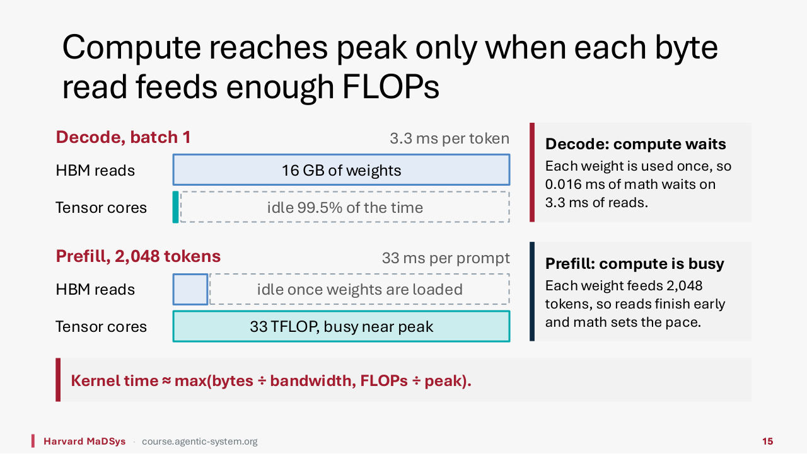
只有每读一个字节都能喂饱足够多的 FLOPs，算力才能跑满
- 解码，batch 1：每个 token 3.3 ms；HBM 读取 16 GB 权重；Tensor Core 99.5% 的时间空闲
- 预填充，2,048 个 token：每个提示词 33 ms；权重加载完后 HBM 读取空闲；Tensor Core 执行 33 TFLOP，接近满载
- 解码：计算在等待——每个权重只用一次，所以 0.016 ms 的计算要等 3.3 ms 的读取
- 预填充：计算很忙——每个权重喂给 2,048 个 token，读取早早完成，由计算决定速度
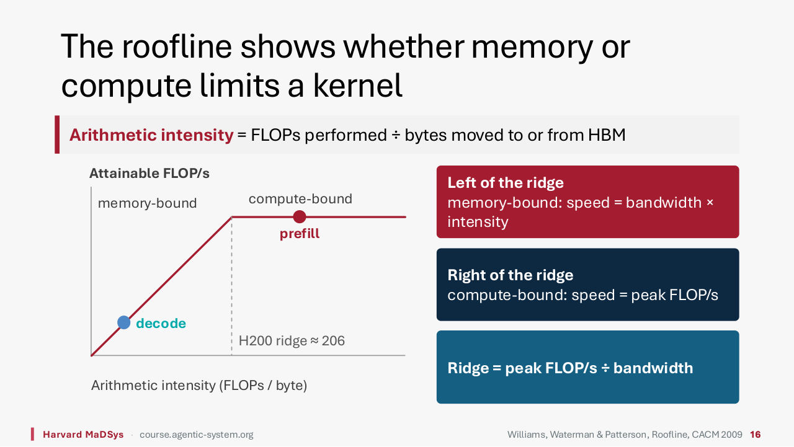
Roofline 模型揭示 kernel 受限于内存还是计算
- 屋脊左侧：内存受限——速度 = 带宽 × 算术强度
- 屋脊右侧：计算受限——速度 = 峰值 FLOP/s
- 屋脊点 = 峰值 FLOP/s ÷ 带宽；H200 的屋脊点 ≈ 206
- 解码位于左侧（内存受限），预填充位于右侧（计算受限）
（Williams, Waterman & Patterson, Roofline, CACM 2009）
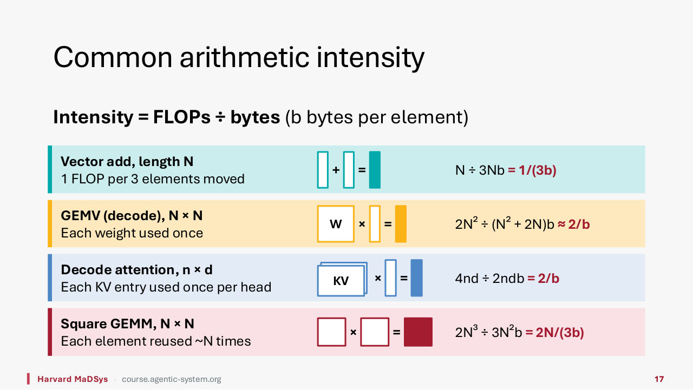
常见的算术强度
算术强度 = FLOPs ÷ 字节数（每个元素 b 字节）
- 向量加法，长度 N：每搬运 3 个元素做 1 次 FLOP → N ÷ 3Nb = 1/(3b)
- GEMV（解码），N × N：每个权重只用一次 → 2N² ÷ (N² + 2N)b ≈ 2/b
- 解码注意力，n × d：每个 KV 项每个头只用一次 → 4nd ÷ 2ndb = 2/b
- 方阵 GEMM，N × N：每个元素被复用约 N 次 → 2N³ ÷ 3N²b = 2N/(3b)
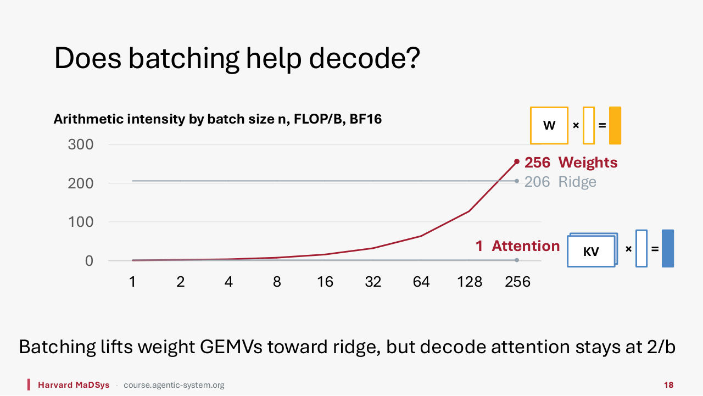
批处理对解码有帮助吗？
按 batch 大小 n 的算术强度（FLOP/B，BF16）：
- 权重 GEMV：随 batch 增大而上升，n = 256 时约 256
- 屋脊点：206
- 注意力：始终约为 1
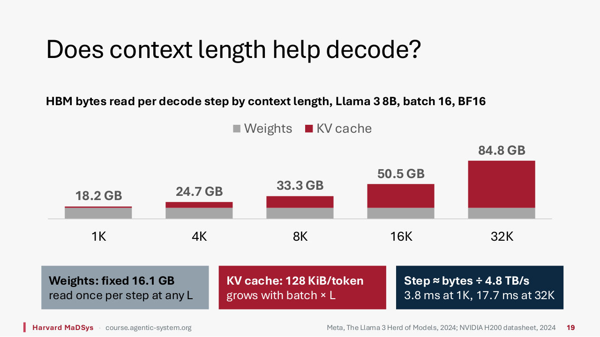
上下文长度对解码有帮助吗？
每个解码步按上下文长度读取的 HBM 字节数（Llama 3 8B，batch 16，BF16）：
- 权重：固定 16.1 GB，无论 L 多大每步读一次
- KV cache：每 token 128 KiB，随 batch × L 增长
- 1K：18.2 GB · 4K：24.7 GB · 8K：33.3 GB · 16K：50.5 GB · 32K：84.8 GB
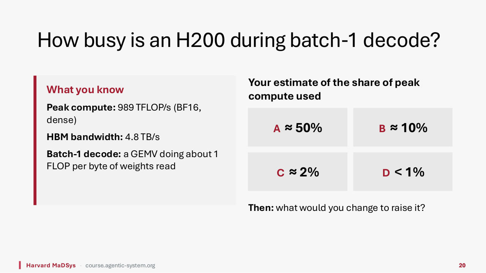
batch-1 解码时，H200 有多忙？
已知
- 峰值算力：989 TFLOP/s（BF16，稠密）
- HBM 带宽：4.8 TB/s
- batch-1 解码：一个 GEMV，每读 1 字节权重约做 1 次 FLOP
估计一下用到了峰值算力的多少：
- A ≈ 50%
- B ≈ 10%
- C ≈ 2%
- D < 1%
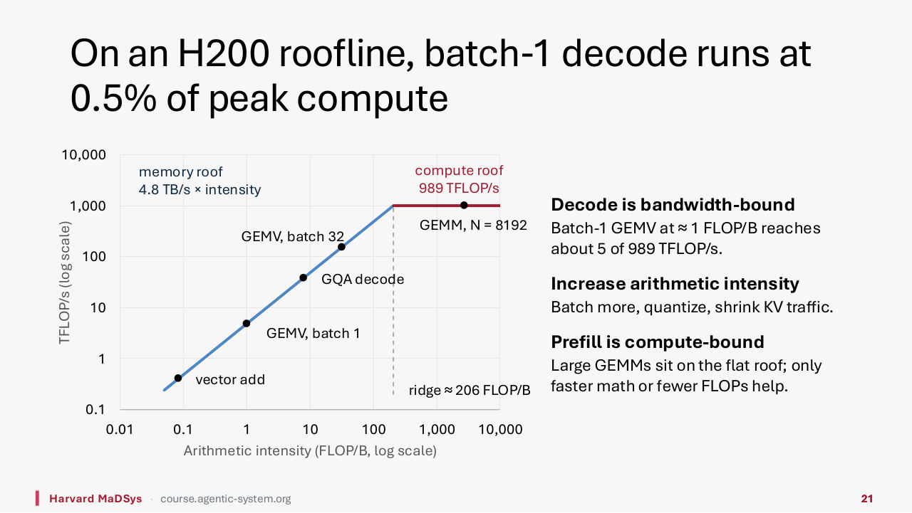
在 H200 的 roofline 上，batch-1 解码只用到 0.5% 的峰值算力
（图：对数坐标的 roofline，标出向量加法、batch-1 GEMV、GQA 解码、batch-32 GEMV、N=8192 的 GEMM；计算屋顶 989 TFLOP/s；内存屋顶 4.8 TB/s × 强度；屋脊点 ≈ 206 FLOP/B）
- 解码受带宽限制：约 1 FLOP/B 的 batch-1 GEMV 只能跑到 989 TFLOP/s 中的约 5
- 提高算术强度：加大 batch、量化、减少 KV 流量
- 预填充受计算限制：大 GEMM 落在平顶上；只有更快的计算或更少的 FLOPs 才有帮助
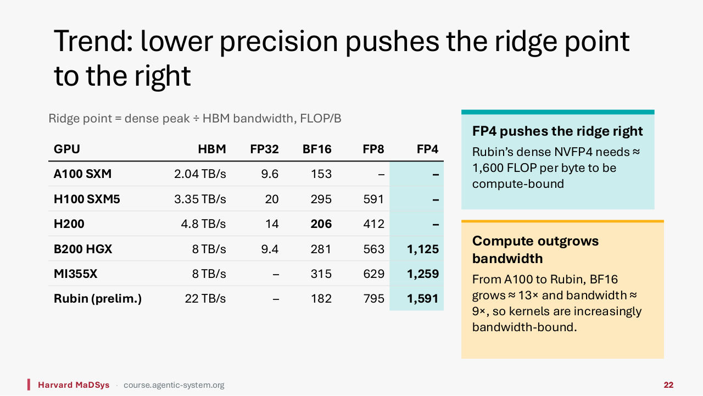
趋势：更低的精度把屋脊点推向右侧
屋脊点 = 稠密峰值 ÷ HBM 带宽（FLOP/B）
| GPU | HBM | FP32 | BF16 | FP8 | FP4 |
|---|---|---|---|---|---|
| A100 SXM | 2.04 TB/s | 9.6 | ~153 | – | – |
| H100 SXM5 | 3.35 TB/s | … | ~295 | ~590 | – |
| H200 | 4.8 TB/s | … | ~206 | ~412 | – |
| B200 HGX | 8 TB/s | 9.4 | ~281 | ~563 | 1,125 |
| MI355X | 8 TB/s | … | … | … | 1,259 |
| Rubin（初步） | 22 TB/s | … | … | … | 1,591 |
（部分数值以原图为准）
- FP4 把屋脊点推向右侧：Rubin 的稠密 NVFP4 需要每字节约 1,600 FLOP 才能达到计算受限
- 算力增长快于带宽：从 A100 到 Rubin，BF16 算力增长约 13 倍，带宽约 9 倍，所以 kernel 越来越受带宽限制
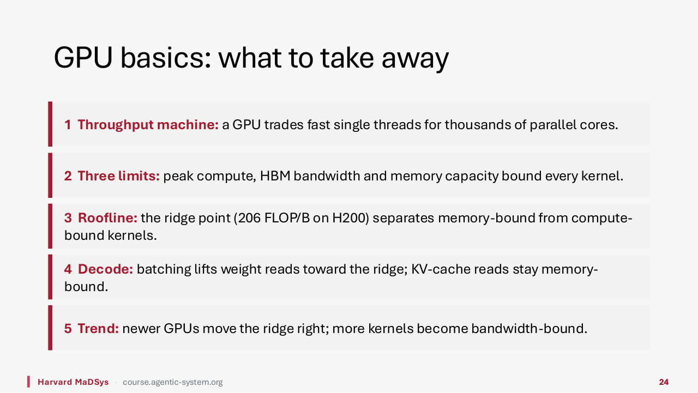
GPU 基础：要点总结
- 吞吐机器：GPU 用快速的单线程换来成千上万的并行核心
- 三个上限：峰值算力、HBM 带宽和显存容量约束着每个 kernel
- Roofline：屋脊点（H200 为 206 FLOP/B）把内存受限和计算受限的 kernel 分开
- 解码：批处理能把权重读取推向屋脊点；KV cache 读取仍然是内存受限
- 趋势：新一代 GPU 把屋脊点右移；越来越多的 kernel 变成带宽受限
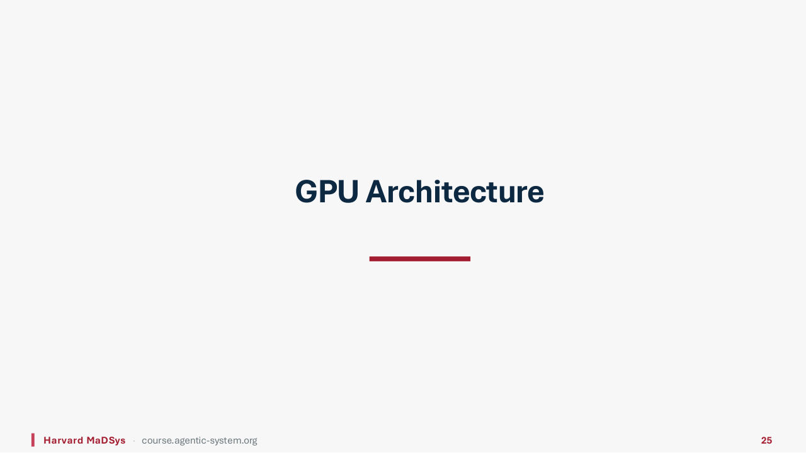
GPU 架构
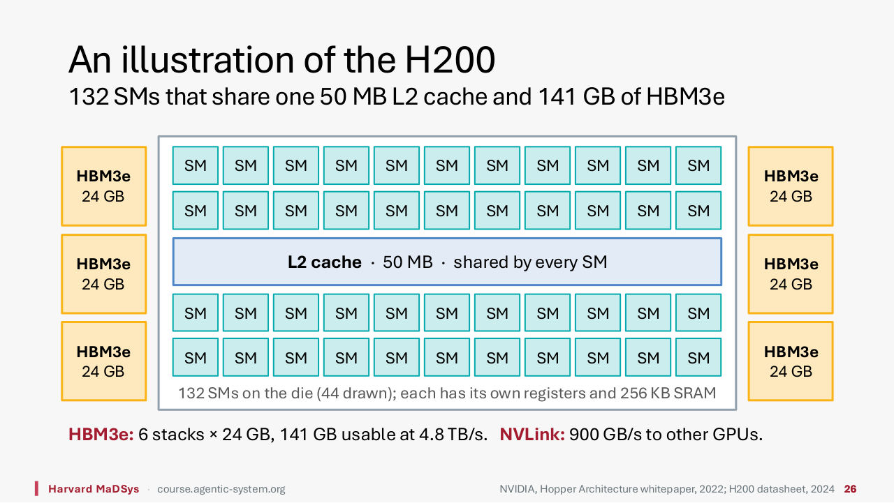
H200 示意图
132 个 SM 共享一个 50 MB 的 L2 缓存和 141 GB 的 HBM3e
- 芯片上有 132 个 SM（图中画了 44 个）；每个 SM 有自己的寄存器和 256 KB SRAM
- L2 缓存 · 50 MB · 所有 SM 共享
- HBM3e：6 个堆栈 × 24 GB，可用 141 GB，带宽 4.8 TB/s
- NVLink：到其他 GPU 900 GB/s
（NVIDIA, Hopper Architecture whitepaper, 2022；H200 datasheet, 2024）
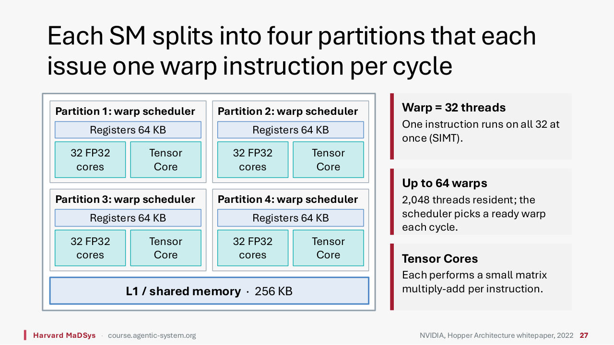
每个 SM 分成四个分区，每个分区每周期发射一条 warp 指令
- 每个分区：一个 warp 调度器、64 KB 寄存器、32 个 FP32 核心、1 个 Tensor Core
- L1 / 共享内存：256 KB
- Warp = 32 个线程：一条指令同时在 32 个线程上执行（SIMT）
- 最多 64 个 warp：2,048 个线程常驻；调度器每周期挑一个就绪的 warp
- Tensor Core：每条指令执行一次小矩阵乘加
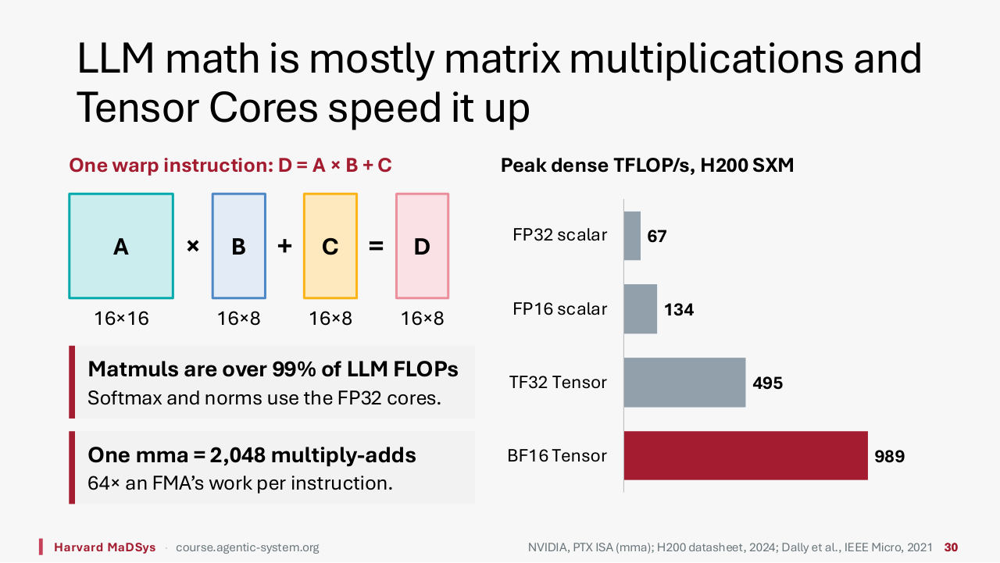
LLM 的计算主要是矩阵乘，Tensor Core 让它变快
一条 warp 指令：D = A × B + C（A 16×16，B 16×8，C 16×8，D 16×8）
- 矩阵乘占 LLM FLOPs 的 99% 以上：softmax 和归一化使用 FP32 核心
- 一次 mma = 2,048 次乘加：每条指令的工作量是一次 FMA 的 64 倍
（图：H200 SXM 的峰值稠密 TFLOP/s——BF16 Tensor ≫ TF32 Tensor ≫ FP16 标量、FP32 标量）
（NVIDIA, PTX ISA (mma)；H200 datasheet, 2024；Dally et al., IEEE Micro, 2021）
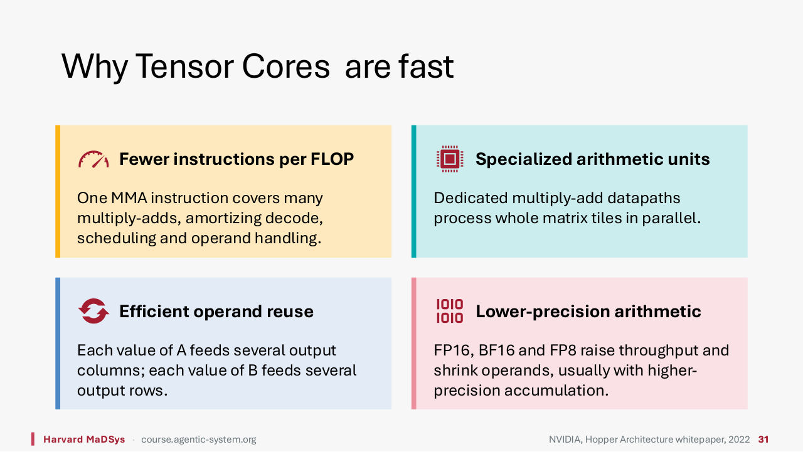
为什么 Tensor Core 这么快
- 专用的算术单元：专门的乘加数据通路并行处理整个矩阵 tile
- 每 FLOP 所需指令更少：一条 MMA 指令覆盖大量乘加，摊薄了译码、调度和操作数处理的开销
- 高效的操作数复用：A 的每个值喂给多个输出列；B 的每个值喂给多个输出行
- 更低精度的运算：FP16、BF16 和 FP8 提高吞吐、缩小操作数，通常配合更高精度的累加
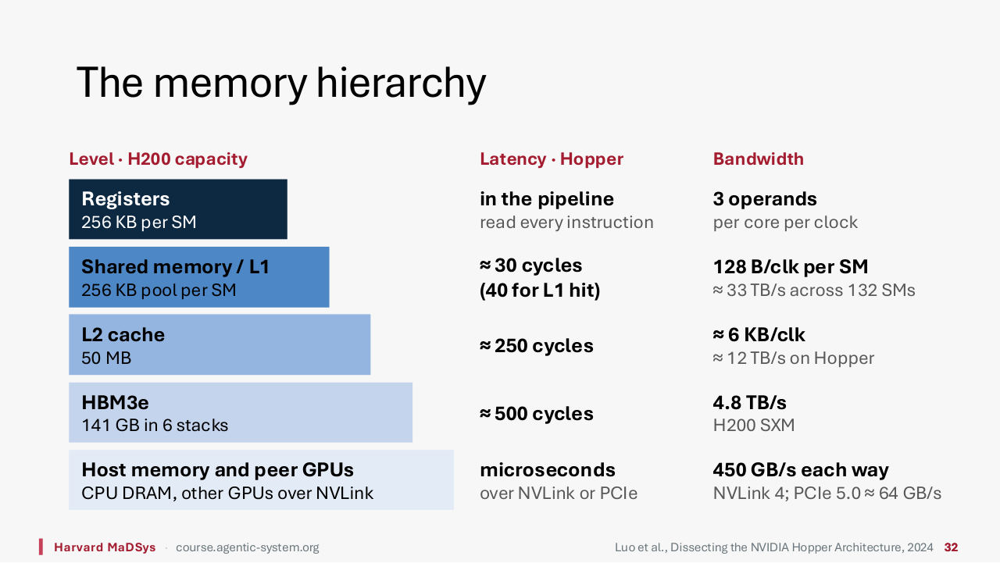
存储层次
| 层级 · H200 容量 | 延迟 · Hopper | 带宽 |
|---|---|---|
| 寄存器 · 每 SM 256 KB | 在流水线中，每条指令都读 | 每核每时钟 3 个操作数 |
| 共享内存 / L1 · 每 SM 256 KB 池 | ≈ 30 周期（L1 命中 40） | 每 SM 128 B/时钟，132 个 SM 合计 ≈ 33 TB/s |
| L2 缓存 · 50 MB | ≈ 250 周期 | ≈ 6 KB/时钟，Hopper 上 ≈ 12 TB/s |
| HBM3e · 6 个堆栈共 141 GB | ≈ 500 周期 | 4.8 TB/s（H200 SXM） |
| 主机内存与对等 GPU · CPU DRAM、经 NVLink 的其他 GPU | 微秒级 | NVLink 4 每方向 450 GB/s；PCIe 5.0 ≈ 64 GB/s |
（Luo et al., Dissecting the NVIDIA Hopper Architecture, 2024）
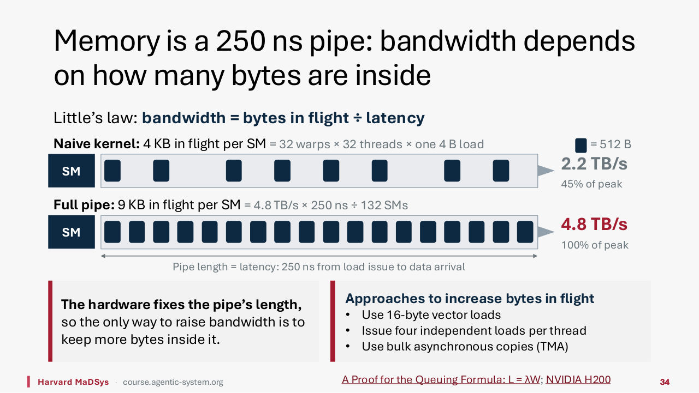
内存是一根 250 ns 长的管道：带宽取决于管道里有多少字节
- 朴素 kernel：每 SM 在途 4 KB = 32 个 warp × 32 个线程 × 一次 4 B 加载 → 2.2 TB/s，峰值的 45%
- 满管道：每 SM 在途 9 KB = 4.8 TB/s × 250 ns ÷ 132 个 SM → 4.8 TB/s，峰值的 100%
- 管道长度 = 延迟：从发起加载到数据到达需 250 ns
增加在途字节的方法
- 使用 16 字节的向量加载
- 每个线程发起四个独立的加载
- 使用批量异步拷贝（TMA）
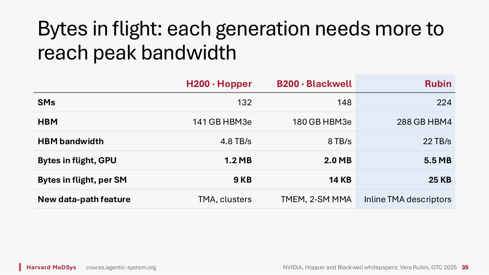
在途字节数：每一代都需要更多才能跑满带宽
| H200 · Hopper | B200 · Blackwell | Rubin | |
|---|---|---|---|
| HBM | 141 GB HBM3e | 180 GB HBM3e | 288 GB HBM4 |
| HBM 带宽 | 4.8 TB/s | 8 TB/s | 22 TB/s |
| 整卡在途字节 | 1.2 MB | 2.0 MB | 5.5 MB |
| 每 SM 在途字节 | 9 KB | 14 KB | 25 KB |
| 新的数据通路特性 | TMA、cluster | TMEM、双 SM MMA | 内联 TMA 描述符 |
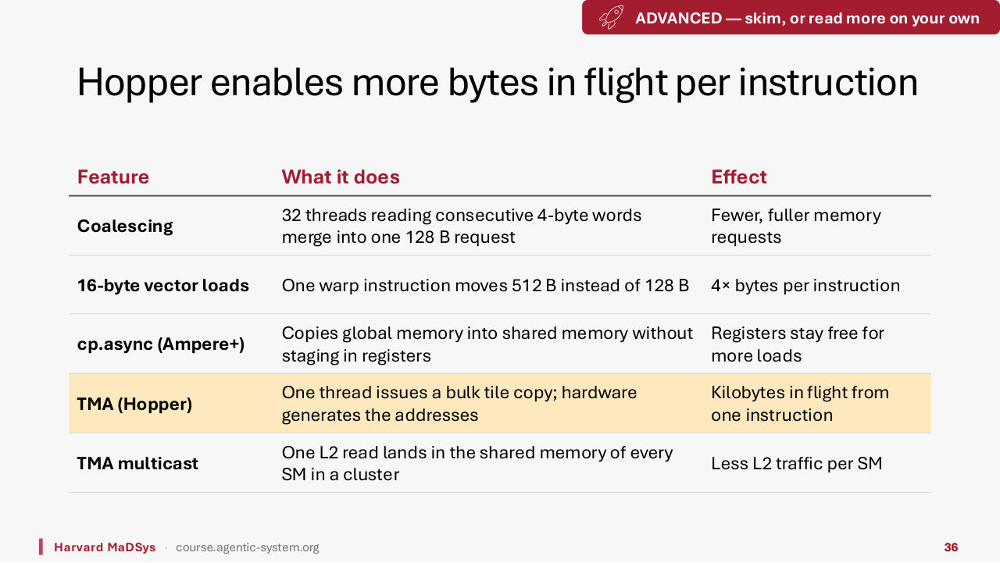
Hopper 让每条指令有更多在途字节
| 特性 | 作用 | 效果 |
|---|---|---|
| 合并访存（Coalescing） | 32 个线程读取连续的 4 字节字，合并为一个 128 B 请求 | 更少、更满的内存请求 |
| 16 字节向量加载 | 一条 warp 指令搬运 512 B 而不是 128 B | 每条指令字节数 ×4 |
| cp.async（Ampere+） | 把全局内存直接拷贝到共享内存，不经过寄存器中转 | 寄存器空出来做更多加载 |
| TMA（Hopper） | 一个线程发起整块 tile 拷贝，由硬件生成地址 | 一条指令就有数 KB 在途 |
| TMA 多播 | 一次 L2 读取落到一个 cluster 中每个 SM 的共享内存 | 降低每个 SM 的 L2 流量 |
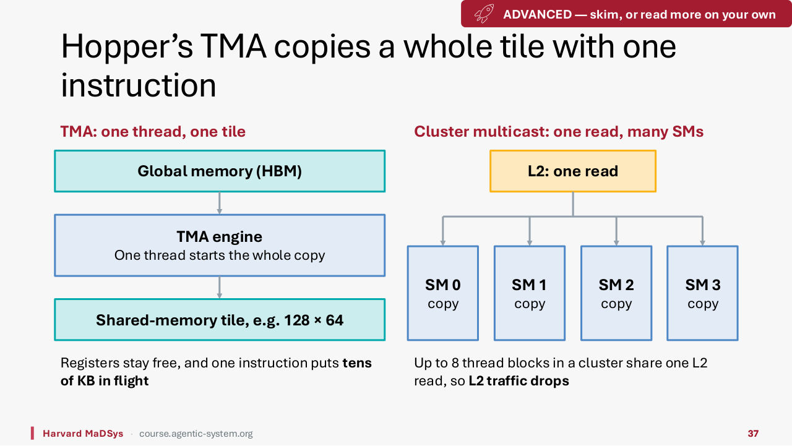
Hopper 的 TMA 用一条指令拷贝整个 tile
TMA：一个线程，一个 tile——全局内存（HBM）→ TMA 引擎 → 共享内存 tile（例如 128 × 64）；一个线程启动整次拷贝。寄存器保持空闲，一条指令就让数十 KB 在途。
Cluster 多播：一次读取，多个 SM——L2 读一次 → SM 0–3 各得一份拷贝。一个 cluster 中最多 8 个线程块共享一次 L2 读取，L2 流量因此下降。
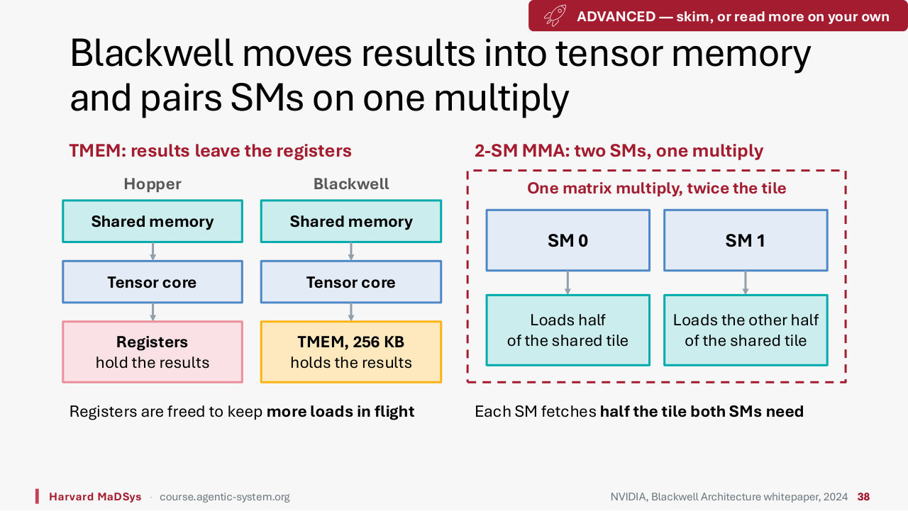
Blackwell 把结果放进张量内存，并让两个 SM 合作完成一次乘法
TMEM：结果离开寄存器
- Hopper：共享内存 → Tensor Core → 由寄存器保存结果
- Blackwell：共享内存 → Tensor Core → 由 TMEM（256 KB）保存结果
- 寄存器被释放出来，以保持更多加载在途
双 SM MMA：两个 SM，一次乘法
- 一次矩阵乘，tile 翻倍
- SM 0 加载共享 tile 的一半，SM 1 加载另一半——每个 SM 只取两者都需要的 tile 的一半
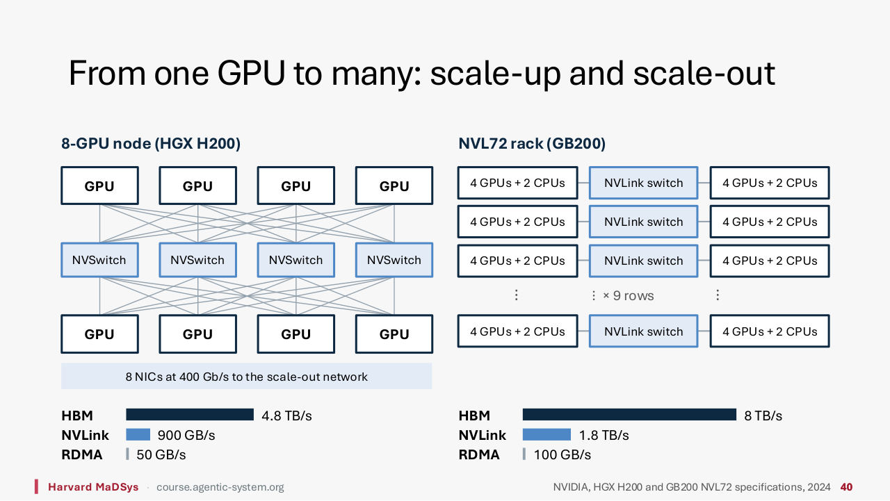
从一块 GPU 到多块：纵向扩展与横向扩展
- 8 卡节点（HGX H200）：8 块 GPU 通过 NVSwitch 互连；8 张 400 Gb/s 网卡连到横向扩展网络。HBM 4.8 TB/s · NVLink 900 GB/s · RDMA 50 GB/s
- NVL72 机架（GB200）：每个托盘 4 块 GPU + 2 个 CPU，共 9 行，通过 NVLink 交换机互连。HBM 8 TB/s · NVLink 1.8 TB/s · RDMA 100 GB/s
（NVIDIA, HGX H200 and GB200 NVL72 specifications, 2024）
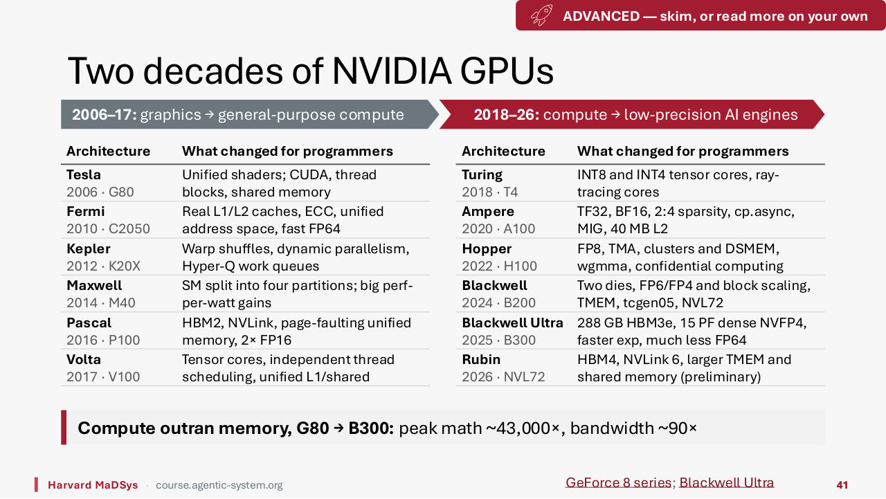
NVIDIA GPU 二十年
| 架构 | 对程序员而言的变化 |
|---|---|
| Tesla · 2006 · G80 | 统一着色器；CUDA、线程块、共享内存 |
| Fermi · 2010 · C2050 | 真正的 L1/L2 缓存、ECC、统一地址空间、快速 FP64 |
| Kepler · 2012 · K20X | warp shuffle、动态并行、Hyper-Q 工作队列 |
| Maxwell · 2014 · M40 | SM 分成四个分区；能效大幅提升 |
| Pascal · 2016 · P100 | HBM2、NVLink、支持缺页的统一内存、2 倍 FP16 |
| Volta · 2017 · V100 | Tensor Core、独立线程调度、统一的 L1/共享内存 |
| Turing · 2018 · T4 | INT8 和 INT4 Tensor Core、光线追踪核心 |
| Ampere · 2020 · A100 | TF32、BF16、2:4 稀疏、cp.async、MIG、40 MB L2 |
| Hopper · 2022 · H100 | FP8、TMA、cluster 与 DSMEM、wgmma、机密计算 |
| Blackwell · 2024 · B200 | 双晶粒、FP6/FP4 与块缩放、TMEM、tcgen05、NVL72 |
| Blackwell Ultra · 2025 · B300 | 288 GB HBM3e、15 PF 稠密 NVFP4、更快的 exp、FP64 大幅缩减 |
| Rubin · 2026 · NVL72 | HBM4、NVLink 6、更大的 TMEM 和共享内存（初步） |
- 2006–17：图形 → 通用计算
- 2018–26：通用计算 → 低精度 AI 引擎
ADVANCED——略读，或自行深入
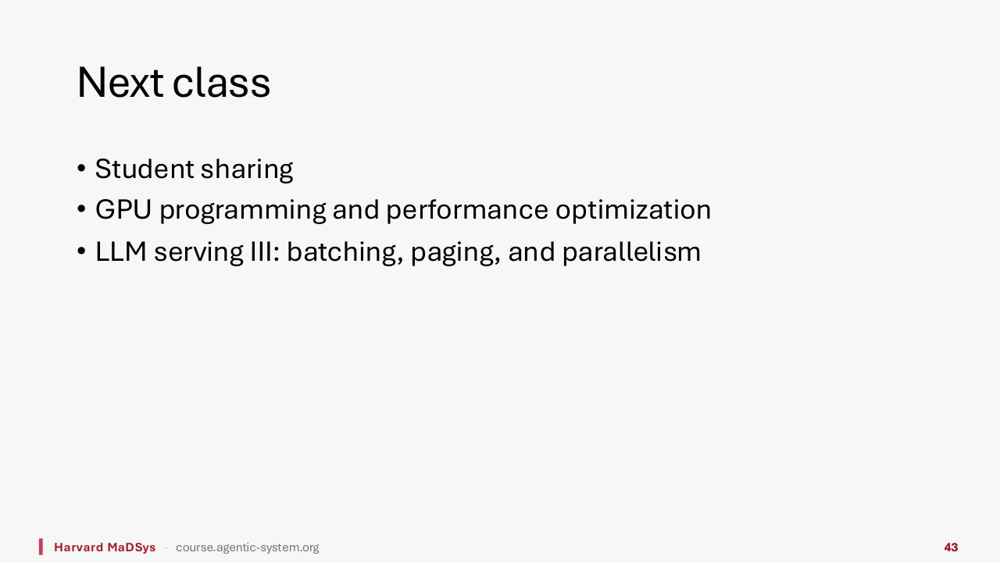
下节课
- 学生分享
- GPU 编程与性能优化
- LLM 推理服务 III：批处理、分页与并行
选读材料
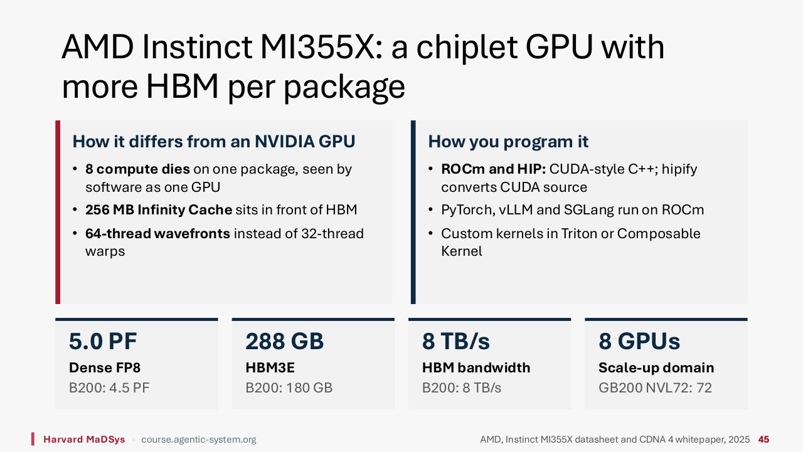
AMD Instinct MI355X：每个封装 HBM 更多的 chiplet GPU
与 NVIDIA GPU 的不同
- 一个封装上 8 个计算晶粒，软件视为一块 GPU
- HBM 前面有 256 MB 的 Infinity Cache
- 64 线程的 wavefront，而不是 32 线程的 warp
如何编程
- ROCm 和 HIP：CUDA 风格的 C++；hipify 可转换 CUDA 源码
- PyTorch、vLLM 和 SGLang 都能在 ROCm 上运行
- 自定义 kernel 可用 Triton 或 Composable Kernel
关键指标：稠密 FP8 5.0 PF（B200：4.5 PF）· HBM3E 288 GB（B200：180 GB）· HBM 带宽 8 TB/s（B200：8 TB/s）· 纵向扩展域 8 块 GPU（GB200 NVL72：72）
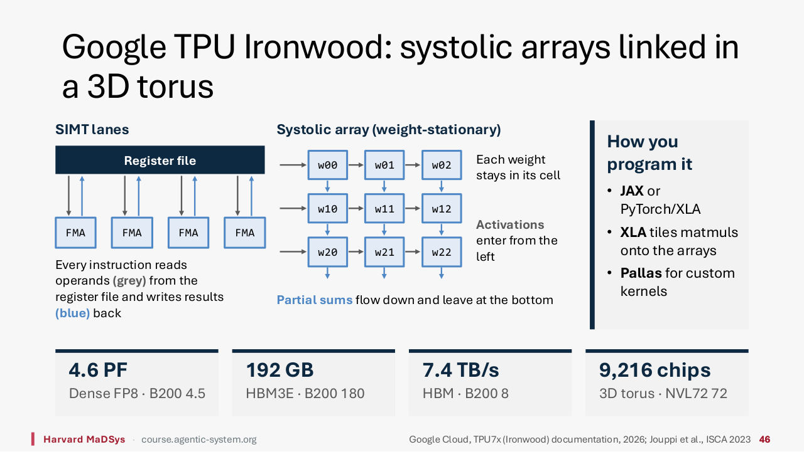
Google TPU Ironwood：以 3D 环面互连的脉动阵列
- SIMT 通道：每条指令都从寄存器堆读取操作数（灰），再把结果（蓝）写回
- 脉动阵列（权重固定式）：每个权重停留在自己的单元里；激活值从左侧进入；部分和向下流动，从底部离开
如何编程
- JAX 或 PyTorch/XLA
- XLA 把矩阵乘切块映射到阵列上
- 自定义 kernel 用 Pallas
关键指标：稠密 FP8 4.6 PF（B200 4.5）· HBM3E 192 GB（B200 180）· HBM 7.4 TB/s（B200 8）· 3D 环面 9,216 颗芯片（NVL72 为 72）
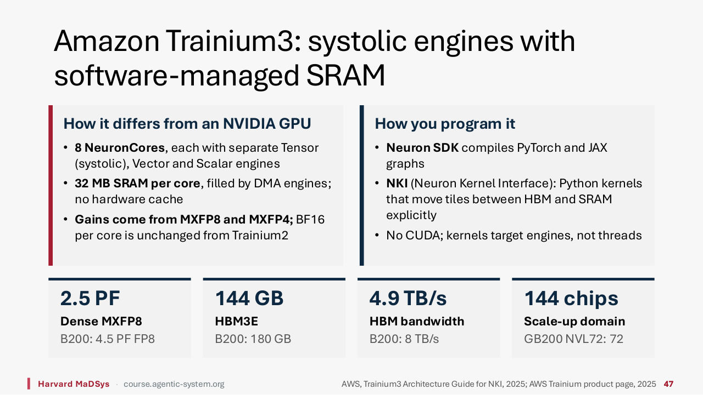
Amazon Trainium3：脉动引擎 + 软件管理的 SRAM
与 NVIDIA GPU 的不同
- 8 个 NeuronCore，每个都有独立的 Tensor（脉动）、Vector 和 Scalar 引擎
- 每核 32 MB SRAM，由 DMA 引擎填充；没有硬件缓存
- 提升来自 MXFP8 和 MXFP4；每核 BF16 算力与 Trainium2 相同
如何编程
- Neuron SDK 编译 PyTorch 和 JAX 计算图
- NKI（Neuron Kernel Interface）：用 Python 编写 kernel，显式地在 HBM 和 SRAM 之间搬运 tile
- 没有 CUDA；kernel 面向的是引擎，而不是线程
关键指标：稠密 MXFP8 2.5 PF（B200：4.5 PF FP8）· HBM3E 144 GB（B200：180 GB）· HBM 带宽 4.9 TB/s（B200：8 TB/s）· 纵向扩展域 144 颗芯片（GB200 NVL72：72）
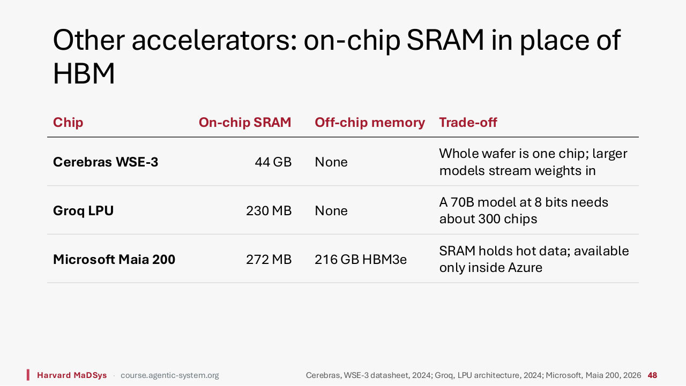
其他加速器：用片上 SRAM 代替 HBM
| 芯片 | 片上 SRAM | 片外内存 | 权衡 |
|---|---|---|---|
| Cerebras WSE-3 | 44 GB | 无 | 整片晶圆就是一颗芯片；更大的模型需要把权重流式载入 |
| Groq LPU | 230 MB | 无 | 一个 8 比特的 70B 模型需要约 300 颗芯片 |
| Microsoft Maia 200 | 272 MB | 216 GB HBM3e | SRAM 存放热数据；仅在 Azure 内可用 |